O Psicólogo e sua Torre de Babel
Depto. de Psicologia Geral e Análise do Comportamento — UEL, Londrina, PR
Reflexões e Pesquisa em Psicologia — o periódico científico da Análise do Comportamento do Sul do Brasil, existente apenas em edição física de 1994 a 1998, agora disponível digitalmente pela primeira vez.
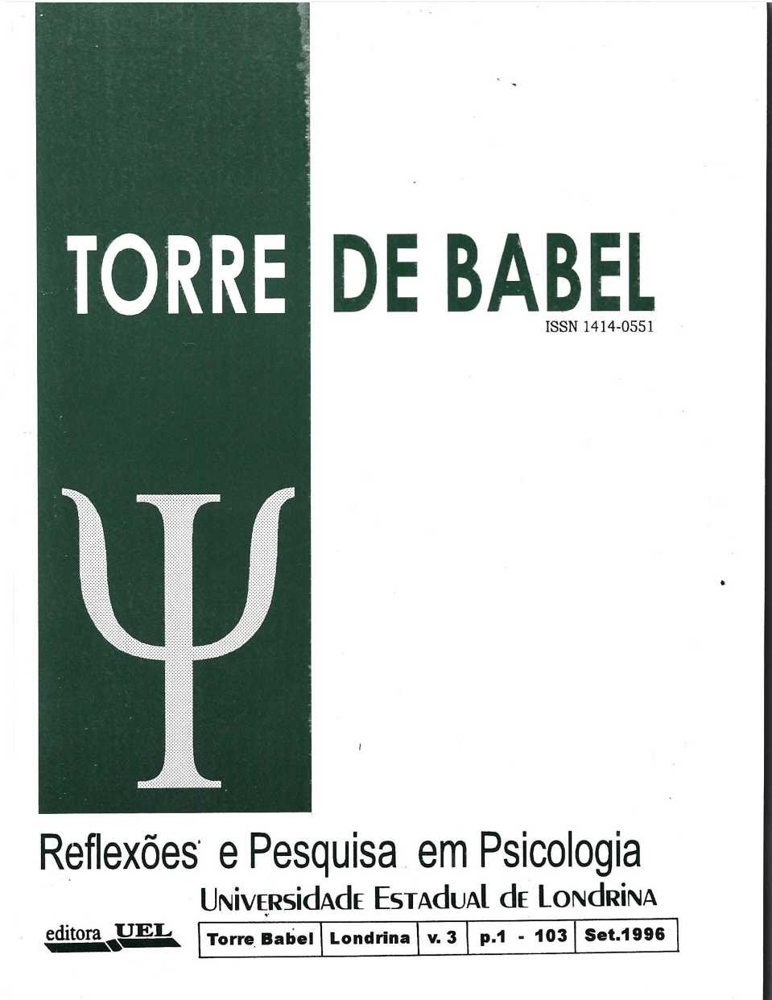
Original · Set. 1996"Há mais de 20 anos estivemos formalmente em contato quase diário com a Psicologia, ouvindo, lendo, refletindo, debatendo, ensinando, criticando, acreditando, praticando-a e depois de tanto tempo me sinto em casa para considerá-la como verdadeira Torre de Babel."
— Rodolpho Carbonari Sant'Anna
Depto. de Psicologia Geral e Análise do Comportamento, UEL
A Torre de Babel foi um periódico científico revisado por pares, publicado pelo Departamento de Psicologia Geral e Análise do Comportamento da Universidade Estadual de Londrina (UEL). Nasceu em 1994 como Revista de Psicologia Experimental e Análise do Comportamento e evoluiu, a partir do Volume 2, para Reflexões e Pesquisa em Psicologia, ampliando seu escopo para circulação nacional.
Editada pelas Dras. Dione de Rezende e Verônica Bender Haydu, a revista reuniu contribuições de pesquisadores da UEL, USP, UNESP, UFP e UNOESTE, consolidando um espaço único de produção científica em Análise do Comportamento no Sul do Brasil durante os anos 1990.
A publicação existiu exclusivamente em formato impresso. Com o encerramento de suas atividades ao final dos anos 1990, suas edições tornaram-se progressivamente inacessíveis — ausentes de repositórios digitais, buscadores acadêmicos e bases de dados. Por mais de duas décadas, permaneceu como lost media da psicologia brasileira.
Este arquivo digital resgata e disponibiliza em acesso aberto os PDFs individuais de cada artigo de cada volume, preservando este importante capítulo da história da Análise do Comportamento no Brasil.
Nossa torre não é uma construção feita de pedra, tijolos, cimento... toda ela é feita de convenções, em parte proposições descritivas do "psicológico", em parte proposições avaliativas. A maleabilidade de tal material de construção vem viabilizando a objetivação de todo e qualquer projeto que a imaginação e criatividade de seus moradores tenha idealizado, imunes ao risco da fragilidade estrutural, pois a estabilidade já vem prescrita nas próprias proposições.
SANT'ANNA, Rodolpho Carbonari. O Psicólogo e sua Torre de Babel.
Torre de Babel, v. 1, p. 6–10, 1994.
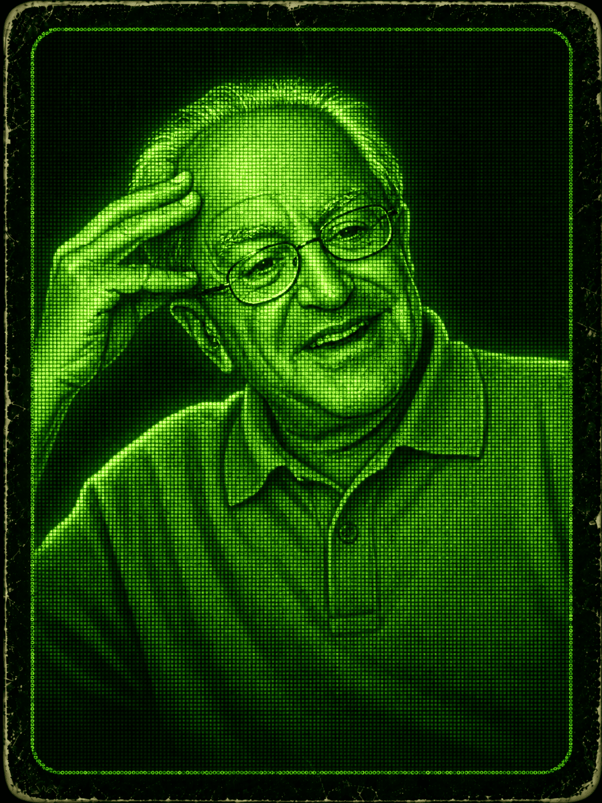
Artigo em Destaque
Inédito online · disponível pela 1ª vez
Depto. de Psicologia Experimental — Instituto de Psicologia, USP · São Paulo
"A emoção ocorre sem que a tenhamos chamado; apresenta-se à consciência como um fenômeno imediato e concreto, que carrega seu próprio sentido."
Por quase três décadas, este artigo existiu apenas em papel — distribuído em poucos exemplares físicos da revista. Texto didático fundamental do Prof. César Ades, formou gerações de estudantes de psicologia na USP e em todo o Brasil. Aqui, sua memória em forma de texto continua viva: os processos que compõem a emoção, o papel dos fenômenos afetivos na interação social e as principais teorias da experiência emocional — do feedback facial à avaliação cognitiva — acessíveis agora a qualquer pesquisador do mundo.
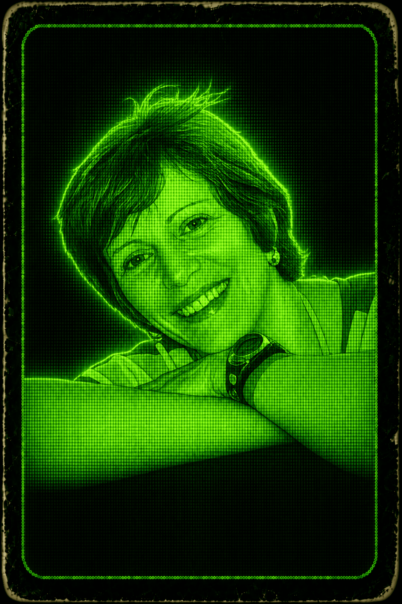
Artigo em Destaque
Último artigo publicado na revista
Universidade Estadual de Londrina · Editor Científico — Torre de Babel v.1–5 (1994–1998)
Redes relacionais envolvendo nomes de pessoas conhecidas e desconhecidas — uma fronteira da análise do comportamento que ainda hoje orienta pesquisas em equivalência de estímulos.
Profa. Dra. Verônica Bender Haydu foi a principal força editorial da Torre de Babel desde seu primeiro número — coordenadora, depois Editor Científico, e colaboradora em múltiplos artigos de dados empíricos ao longo dos cinco volumes. Neste trabalho pioneiro, publicado no último número da revista em 1998, Haydu e colaboradoras exploram as redes relacionais formadas por equivalência de estímulos, antecipando uma linha de pesquisa que viria a se consolidar como área central da análise do comportamento brasileira. Com os dados empíricos desta e de outras pesquisas da revista agora acessíveis online pela primeira vez, abre-se uma janela inédita para quem estuda a produção científica deste campo em sua fase formativa.
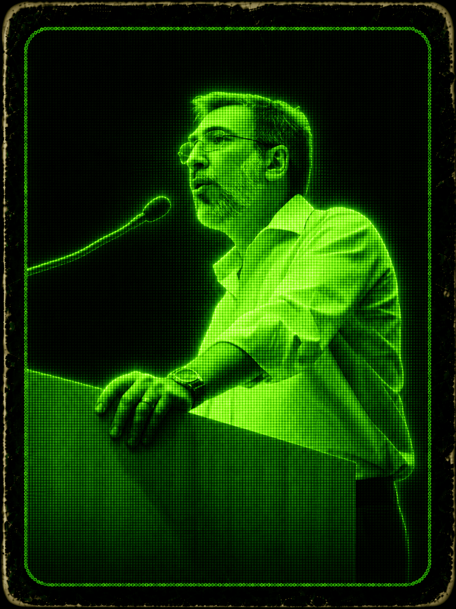
Artigo em Destaque
Documento histórico da psicoterapia brasileira
Faculdade de Psicologia — Pontifícia Universidade Católica de São Paulo (PUC-SP)
Um relato em primeira pessoa sobre o que forma um terapeuta — os bastidores da clínica comportamental vistos por dentro, na voz de quem ajudou a construí-la no Brasil.
Roberto Alves Banaco é um dos mais influentes terapeutas comportamentais do Brasil. Este artigo, publicado em 1996, é um documento raro: um relato informal e autobiográfico sobre sua própria formação como formador em psicoterapia. Em vez de um texto técnico convencional, Banaco oferece uma janela privilegiada para o desenvolvimento pessoal do terapeuta — os desafios, os aprendizados, as dúvidas e as convicções que moldam quem forma outros clínicos. Para estudiosos da história da psicoterapia comportamental no Brasil e da trajetória intelectual de Banaco, este texto é uma fonte primária insubstituível. Permaneceu restrito a poucos exemplares físicos por décadas; disponível aqui pela primeira vez em acesso aberto.
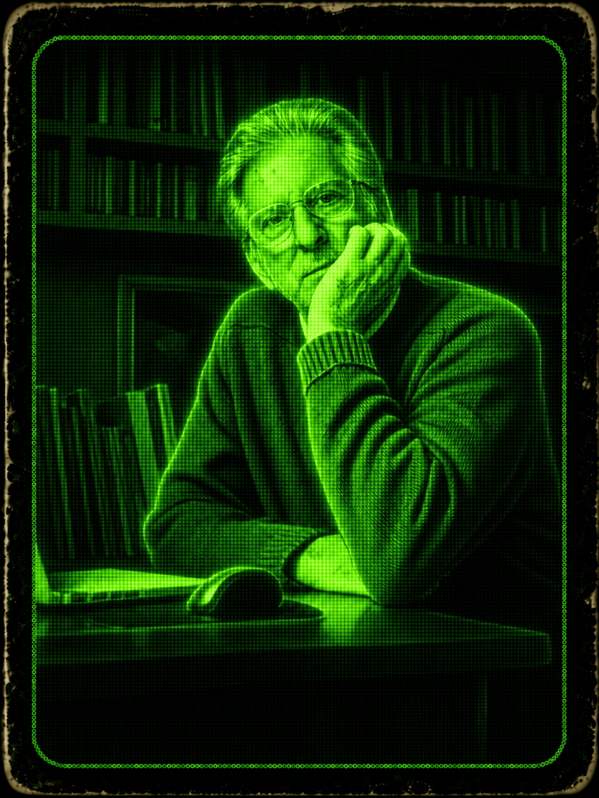
Artigo em Destaque
Texto didático · ainda atual
Livre-Docente — Universidade de São Paulo · Ribeirão Preto
"O tempo, fator onipresente no comportamento, raramente recebe o tratamento sistemático que merece — este artigo é uma das raras exceções na literatura em língua portuguesa."
Em dez páginas precisas, o Prof. José Lino Oliveira Bueno apresenta um panorama rigoroso e acessível dos fatores temporais no condicionamento clássico — tocando nas contribuições de Staddon e Rescorla, dois dos pesquisadores mais influentes do estudo do comportamento respondente. O texto enfrenta de frente tópicos que até hoje são raramente abordados com esta clareza na literatura didática brasileira: a relação entre o intervalo CS-US, a contingência, a contiguidade e os modelos computacionais do condicionamento. Didático sem ser superficial, o artigo permanece atual como introdução ao tema e como convite ao aprofundamento. Disponível agora em acesso aberto pela primeira vez.
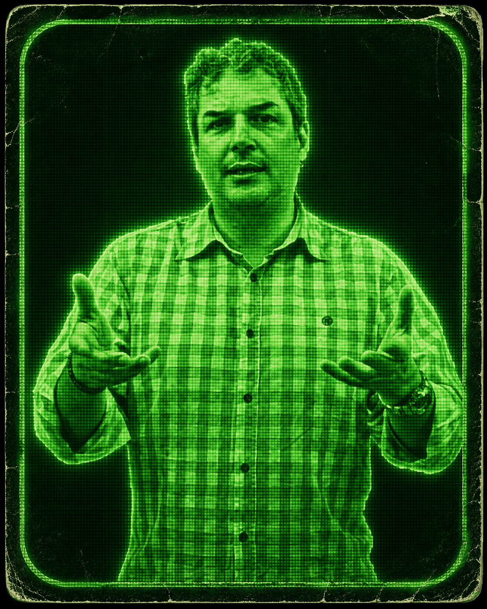
Artigo em Destaque
Leitura essencial · primeiro volume
Universidade Estadual de Londrina · Depto. de Psicologia Geral e Análise do Comportamento
Uma pergunta simples que abre uma discussão profunda — e que qualquer estudante de psicologia deveria enfrentar antes de decidir o que estudar.
O Prof. Carlos Eduardo Costa é um dos pesquisadores mais prolíficos desta revista, com contribuições em múltiplos volumes abrangendo análise clínica, raciocínio, resolução de problemas e comportamento animal. Este artigo, publicado já no primeiro volume da Torre de Babel em 1994, é o mais duradouro: uma defesa sensível e bem fundamentada do estudo do comportamento animal como parte indispensável da formação em psicologia. O texto enfrenta o preconceito histórico contra a pesquisa básica com animais na psicologia aplicada, argumenta com clareza sobre o papel da pesquisa translacional e convida o leitor a pensar o método antes de escolher o objeto. Atual, necessário — e escrito com uma clareza rara para um tema frequentemente mal compreendido.
Artigo em Destaque
Teoria · primeiro volume
Instituto de Psicologia — Universidade de São Paulo · São Paulo
"Como fruto da seleção ontogenética, cada organismo se torna único, torna-se pessoa porque adquire um repertório de comportamento que depende de sua história de vida particular; como membro de uma cultura, cada pessoa pode atuar sobre o acaso que caracteriza a variação e a seleção nos dois primeiros níveis, porque pode planejar sua própria cultura."
Publicado no primeiro número da Torre de Babel em 1994, este artigo da Profa. Lígia Machado — membro do conselho editorial da revista e pesquisadora do IPUSP — oferece uma das apresentações mais claras e abrangentes do behaviorismo radical como filosofia do homem integral. Articulando filogênese, ontogênese e cultura como os três níveis que constroem o indivíduo, o texto vai além do estereótipo mecanicista frequentemente atribuído ao behaviorismo e revela sua dimensão filosófica mais profunda: o ser humano como produto e produtor de sua própria história. Uma leitura indispensável para quem quer entender o que o behaviorismo radical diz — e o que ele não diz — sobre a natureza humana.
Selecione uma capa abaixo para explorar os artigos daquele volume. Clique em ↓ PDF para abrir o artigo individual.
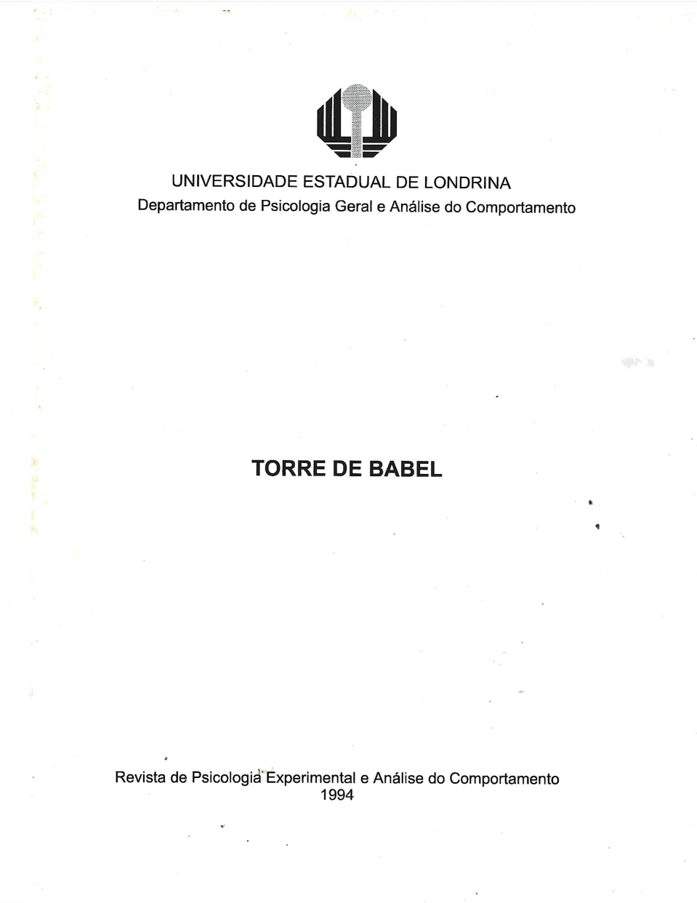
Vol. 1 · 1994
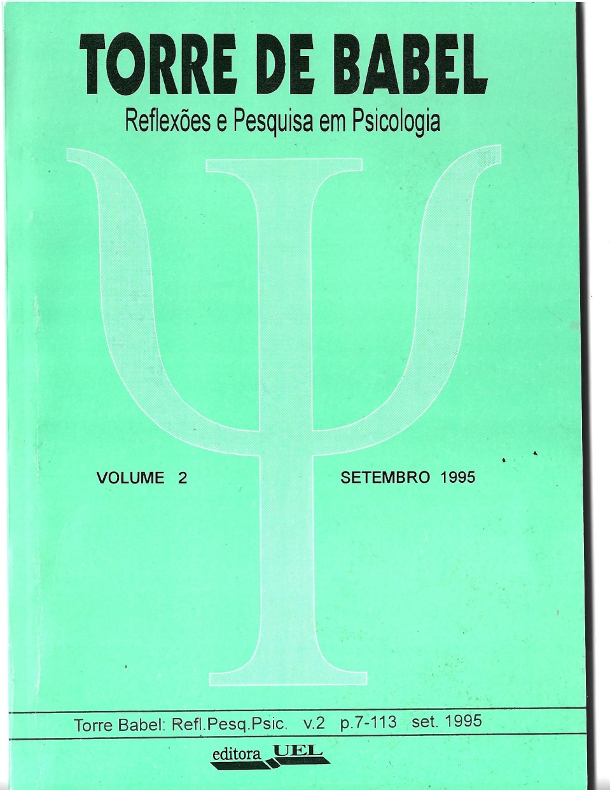
Vol. 2 · 1995
Vol. 3 · 1996
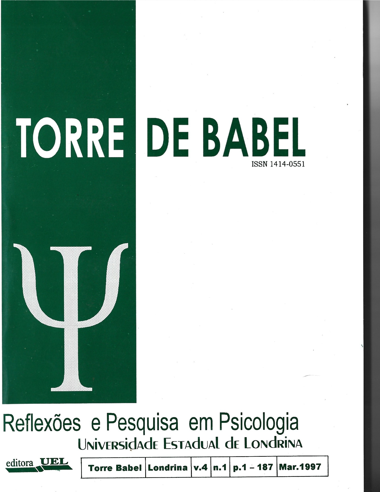
Vol. 4, n.1 · Mar. 1997
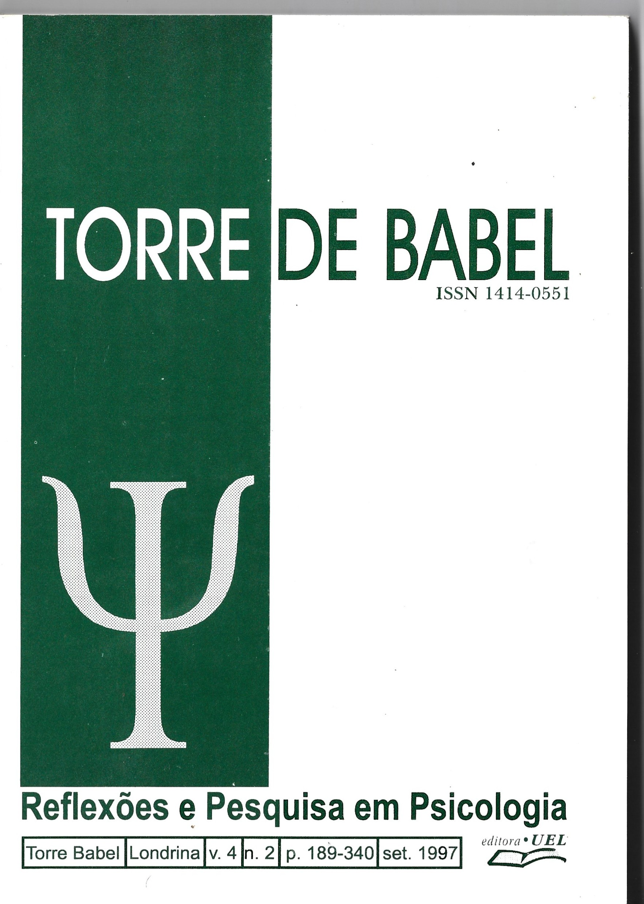
Vol. 4, n.2 · Set. 1997
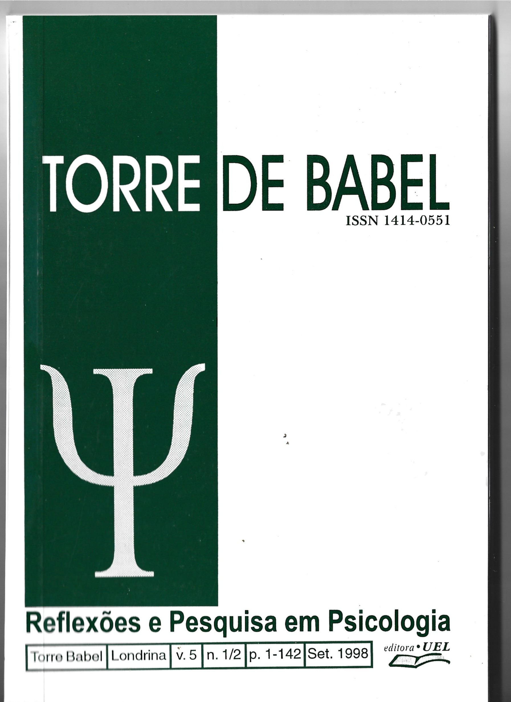
Vol. 5, n.1/2 · Set. 1998
UNIVERSIDADE ESTADUAL DE LONDRINA
Depto. de Psicologia Geral e Análise do Comportamento
TORRE
DE BABEL
Revista de Psicologia Experimental
e Análise do Comportamento
1994
Primeiro volume da revista, publicado em formato de circulação interna pelo Departamento de Psicologia Geral e Análise do Comportamento da UEL. Contém 5 artigos teórico-experimentais e 15 resumos de pesquisa. A edição original não possui ISSN registrado, refletindo o caráter inaugural da publicação. Editores: Dra. Dione de Rezende e Dra. Verônica Bender Haydu.
Editorial + Sumário
Editorial e Sumário — Volume 1
Depto. de Psicologia Geral e Análise do Comportamento — UEL
Artigos
O Psicólogo e sua Torre de Babel
Depto. de Psicologia Geral e Análise do Comportamento — UEL, Londrina, PR
Behaviorismo Radical: Uma Visão do Homem Integral
Depto. de Psicologia Experimental — USP, São Paulo
As Relações entre a Psicologia e a Psicofarmacologia
Depto. de Psicologia Geral e Análise do Comportamento — UEL, Londrina, PR · New Jersey University — U.S.A.
Por que Estudar o Comportamento Animal em Psicologia?
Depto. de Psicologia Geral e Análise do Comportamento — UEL, Londrina, PR
Efeitos da Punição sobre a Taxa de Resposta de Alternação em Esquema Concorrente de Reforçamento Simétrico em Universitários
Depto. de Psicologia Geral e Análise do Comportamento — UEL, Londrina, PR
Resumos de Pesquisa (p. 42–56)
Efeitos da Densidade de Reforço sobre a Taxa de Resposta de Escolha Reforçada Concorrentemente em Universitários
Depto. de Psicologia Geral e Análise do Comportamento — UEL, Londrina, PR
Estímulo Aversivo como Sinalizador de Ocorrência de Reforço
Depto. de Psicologia Geral e Análise do Comportamento — UEL, Londrina, PR
Treino Discriminativo: Comparação entre Procedimentos que Requerem ou Não Extinção das Respostas diante do S⁻
Depto. de Psicologia Geral e Análise do Comportamento — UEL, Londrina, PR
Polidipsia Induzida por Contingência em Ratos
Depto. de Psicologia Geral e Análise do Comportamento — UEL, Londrina, PR
Efeitos da Punição sobre a Resposta de Escolha do Esquema com Maior Densidade de Reforço em Universitários
Depto. de Psicologia Geral e Análise do Comportamento — UEL, Londrina, PR
Comparação entre Três Métodos de Extinção de Comportamento
Depto. de Psicologia Geral e Análise do Comportamento — UEL, Londrina, PR
Efeitos da Punição e Extinção sobre a Taxa da Resposta de Pressão à Barra
Depto. de Psicologia Geral e Análise do Comportamento — UEL, Londrina, PR
Comparação de Dois Procedimentos na Aquisição de uma Cadeia Comportamental em Ratos
Depto. de Psicologia Geral e Análise do Comportamento — UEL, Londrina, PR
Treino de Discriminação com Duas Condições de Estímulos Luminosos
Depto. de Psicologia Geral e Análise do Comportamento — UEL, Londrina, PR
Aquisição e Manutenção da Resposta de Esquiva em Ratos
Depto. de Psicologia Geral e Análise do Comportamento — UEL, Londrina, PR
Discriminação entre Presença e Ausência de Luz em Ratos
Depto. de Psicologia Geral e Análise do Comportamento — UEL, Londrina, PR
Generalização de Estímulos Luminosos em Ratos
Depto. de Psicologia Geral e Análise do Comportamento — UEL, Londrina, PR
Efeitos de Diferentes Graus de Privação de Água sobre a Taxa de Resposta de Pressão à Barra
Depto. de Psicologia Geral e Análise do Comportamento — UEL, Londrina, PR
Avaliação de Ansiedade em Pré-Vestibulandos do 3º Ano Colegial e Cursinho de uma Escola Particular
Depto. de Psicologia Geral e Análise do Comportamento — UEL, Londrina, PR
Psicoterapia de Grupo: Autocontrole no Tratamento da Obesidade
Depto. de Psicologia Geral e Análise do Comportamento — UEL, Londrina, PR
Normas e Instruções
Normas para Publicação
Com o segundo volume a revista amplia seu subtítulo para Reflexões e Pesquisa em Psicologia, tornando-se veículo de circulação nacional. Inclui 8 artigos originais abrangendo análise do comportamento, educação especial, riscos ambientais e processamento de informação (sistema NOMOS). Publicação anual do Departamento de Psicologia Geral e Análise do Comportamento — UEL.
Editorial + Sumário
Editorial — Volume 2
Depto. de Psicologia Geral e Análise do Comportamento — UEL
Artigos
Riscos Ambientais à Criança: reflexões para a proposta de intervenção preventiva junto a famílias
Universidade Estadual de Londrina
A Relação Funcional como uma Noção de Explicação
Universidade Estadual de Londrina
Reflexões sobre a Análise Experimental do Comportamento e Análise do Comportamento Aplicada à Clínica
Universidade Estadual de Londrina
Educação Especial: uma reflexão sobre o processo de normalização e de integração da pessoa portadora de necessidades educacionais especiais (PPNEE)
Universidade Estadual de Londrina
Resolução de Problemas em NOMOS V31: efeito do grau de dificuldade de edução de regras durante o learning set sobre o desempenho subsequente
Universidade de São Paulo · Universidade Estadual de Londrina
Edução de Regras em NOMOS V3: efeito de condições de resolução silenciosa, verbalizada e sob interferência, sob diferentes graus de dificuldade de edução
Universidade Estadual de Londrina · Universidade de São Paulo
Uma Ciência do Comportamento: Psicologia
Universidade Estadual de Londrina
Práticas Psicossociais de Cuidados em Ambientes Familiares de Baixa Renda de Londrina – PR
Universidade Estadual de Londrina
Normas e Instruções
Normas para Publicação
O terceiro volume consolida o ISSN cadastrado no Centro Brasileiro do ISSN/IBICT e inaugura um perfil mais diversificado — todos os 6 artigos são de pesquisadores externos à UEL (USP, PUC-SP, UFPR, UERJ), refletindo a consolidação da revista como veículo de circulação nacional. Chefe do Depto.: Profª Dra. Maura Alves Nunes Gongora.
Editorial + Sumário
Editorial — Volume 3
Depto. de Psicologia Geral e Análise do Comportamento — UEL
Artigos
De que Trata a Emoção
Universidade de São Paulo — São Paulo
O Desenvolvimento Pessoal do Terapeuta: Análises Informais de um Formador em Psicoterapia
Faculdade de Psicologia — Pontifícia Universidade Católica de São Paulo (PUC-SP)
Fatores Temporais no Condicionamento Clássico
Universidade de São Paulo — Ribeirão Preto
Língua de Sinais ou Sistemas de Sinais?
Universidade de São Paulo · Universidade do Estado do Rio de Janeiro (UERJ)
Agressão Humana
Universidade Federal do Paraná (UFPR)
Estudos Preliminares para Adaptação e Validação Brasileiras do Teste de Vocabulário por Imagens Peabody
Universidade de São Paulo · Universidade do Estado do Rio de Janeiro (UERJ)
Normas e Instruções
Normas para Publicação
n.1 · Mar.
n.2 · Set.
A partir deste volume a revista passa a ter periodicidade semestral. O quarto volume foi publicado em dois números em 1997, totalizando 340 páginas. O n.1 (março) reúne artigos sobre comunicação alternativa, leitura fonológica, raciocínio, psicoterapia e paralisado cerebral. Chefe do Depto.: Profª Dra. Maura Alves Nunes Gongora.
Número 1 — Março 1997 · p. 1–187
Editorial + Sumário
Editorial — Vol. 4, n.1
Depto. de Psicologia Geral e Análise do Comportamento — UEL
Breve Histórico da Aplicação de Meios e Sistemas Alternativos e Promotores de Comunicação para Afasias
Instituto de Psicologia — Universidade de São Paulo
Avaliação das Estratégias de Leitura Fonológica e Lexical I: Descrição Técnica do Software Cronofonos 2.0
Instituto de Psicologia — USP · Faculdade Tecnológica de São Paulo · Escola Politécnica — USP
Avaliação das Estratégias de Leitura Fonológica e Lexical II: Aplicação do Software Cronofonos 2.0 a Universitários
Instituto de Psicologia — USP · Faculdade Tecnológica de São Paulo · Escola Politécnica — USP
Resolução de Problemas e Raciocínio
Universidade Paulista · Universidade de São Paulo
A Psicoterapia Analítico-Funcional Aplicada à Terapia Comportamental Infantil: a Participação da Criança
Universidade Estadual de Londrina
A Análise de Contingências e a Reformulação de Regras no Processo Terapêutico
Universidade Estadual de Londrina
O Processamento de Informação no Paralisado Cerebral e o Uso de Sistemas de Comunicação Alternativa como Próteses Cognitivas
Instituto de Psicologia — Universidade de São Paulo
Normas e Instruções — n.1
Normas para Publicação
Número 2 — Setembro 1997 · p. 189–340
Editorial + Sumário
Editorial — Vol. 4, n.2
Depto. de Psicologia Geral e Análise do Comportamento — UEL
Equação-Equilíbrio: O Modelo da Balança e a Análise da Resolução de Problemas Aritméticos em Escolares do Ensino Fundamental
Universidade de São Paulo · Universidade Estadual de Londrina
Resolução de Problemas Aritméticos: Analisando a Participação de Processos Verbais e a Importância da Posição da Incógnita
Universidade Estadual de Londrina · Universidade de São Paulo
Resolução de Problemas em NOMOS V3.1: I. Efeitos do Envolvimento na Tarefa sobre as Notas e do Número de Oportunidades de Formular Hipóteses sobre a Formação do Learning Set
Universidade Paulista · Universidade de São Paulo
Resolução de Problemas em NOMOS V3.1: II. Formulação de Hipóteses como Função dos Atributos da Regra
Universidade Paulista · Instituto de Psicologia — Universidade de São Paulo
Imagética Mental: Sua Importância, Sua História e a Polêmica sobre a Natureza das Representações Mentais
Universidade de São Paulo
Um Ensaio sobre a Caracterização da Psicobiologia
Universidade Estadual de Londrina
Normas e Instruções — n.2
Normas para Publicação
Último volume da revista, publicado como número duplo (n.1/2). Neste volume Dione de Rezende assume o título de Editor Científico Emérito, sendo Verônica Bender Haydu a única Editor Científico. O Sumário é pela primeira vez bilíngue (português + inglês). O Conselho passa a se chamar Conselho Científico, com a inclusão de Dra. Zilda Del Pretti (UFScr). Editoração realizada por Paula Orchiucci Miura (bolsista CNPq).
Editorial + Sumário
Editorial — Vol. 5, n.1/2
Depto. de Psicologia Geral e Análise do Comportamento — UEL
Artigos
Crenças e Paradigmas: Funções Distintas ou Similares?
Universidade Estadual de Londrina
Desenvolvendo a Auto-Exposição como um Repertório Incompatível com o Comportamento Delinquente
Universidade Estadual de Londrina
Uma Interpretação da Edução de Regras para a Resolução de Problemas no Software NOMOS Baseada em Conceitos da Psicologia Cognitiva
Universidade de São Paulo · Universidade do Estado do Rio de Janeiro (UERJ)
Caracterização da População Atendida por Clínicas-Escola: Breve Revisão da Bibliografia Nacional
(instituição não especificada no sumário)
Relações de Equivalência e a Recordação de Nomes: Redes Relacionais Envolvendo Nomes de Pessoas Conhecidas e Desconhecidas
Universidade Estadual de Londrina
Normas e Instruções
Normas para Publicação
Do editorial — Volume 1, 1994
A presente revista surgiu a partir da idéia de publicar os resumos de trabalhos desenvolvidos pelos alunos do curso de Psicologia do Departamento de Psicologia Geral e Análise do Comportamento. Esta idéia foi bem aceita, mas constatamos que existiam diversos artigos teóricos e experimentais produzidos por docentes e alunos de nossa instituição que mereciam também ser publicados.
— Dione de Rezende & Verônica Bender Haydu
Editoras, Torre de Babel v.1, 1994
Do editorial — Volume 2, 1995
Desta forma passou-se a sonhar com uma revista específica na área de Análise do Comportamento, entretanto este sonho foi interrompido pelas inúmeras sugestões recebidas de colegas da UEL e de outras instituições, para que a revista não se restringisse a artigos desta área. Assim, o conselho editorial concordou em alterar o objetivo da revista.
— Verônica Bender Haydu & Dione de Rezende
Editoras, Torre de Babel v.2, 1995
Editora / Coordenadora
Dra. Dione de Rezende
UEL — Londrina, PR
Editora / Coordenadora
Dra. Verônica Bender Haydu
UEL — Londrina, PR (Chefe do Depto., v.2)
Conselho Editorial
Dra. Carmen Garcia de Almeida
UEL
Conselho Editorial
Dra. Elsa Maria Mendes Pessoa Pullin
UNOESTE / UEL
Conselho Editorial
Dra. Ligia Maria de Castro Marcondes Machado
USP — São Paulo
Conselho Editorial
Dra. Heloísa Helena Nunes Sant'Anna
UEL
Conselho Editorial
Dr. Fernando Cesar Capovilla
USP — São Paulo
Conselho Editorial
Dra. Paula Inez Cunha Gomide
UFP
Conselho Editorial
Profa. Paula Zedu Alliprandini
UNESP — Assis
Conselho Editorial
Prof. Rodolpho Carbonari Sant'Anna
UEL
Conselho Editorial (v.2+)
Livre Doc. José Lino Oliveira Bueno
USP — Ribeirão Preto
Conselho Editorial (v.2+)
Prof. Solange Ferreira da Silva
UEL
Um laboratório do PPGAC-UEL — Programa de Pós-Graduação em Análise do Comportamento da Universidade Estadual de Londrina.
CRIACOM
Grupo de Pesquisa em Criatividade, Inovação, Cognição e Comportamento
O CRIACOM é responsável pela digitalização, curadoria e disponibilização deste acervo em acesso aberto. A iniciativa busca preservar a produção científica histórica da Análise do Comportamento no Brasil, tornando acessível um patrimônio que permaneceu em formato exclusivamente impresso por mais de duas décadas.
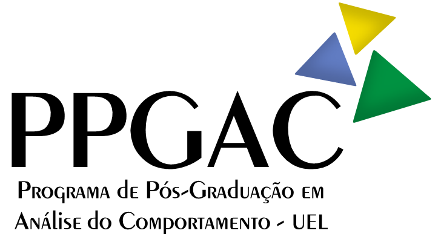
PPGAC — UEL
Programa de Pós-Graduação em Análise do Comportamento — Universidade Estadual de Londrina
O PPGAC-UEL é o programa de pós-graduação que abriga o CRIACOM e dá continuidade à tradição de pesquisa em Análise do Comportamento da UEL — a mesma tradição que originou a Revista Torre de Babel em 1994. O programa é herdeiro direto do Departamento de Psicologia Geral e Análise do Comportamento que editou o periódico.
Organização do Acervo Físico
Dr. Renan Kois
PPGAC — Universidade Estadual de Londrina
Website
Dr. Hernando Neves Filho
PPGAC — Universidade Estadual de Londrina